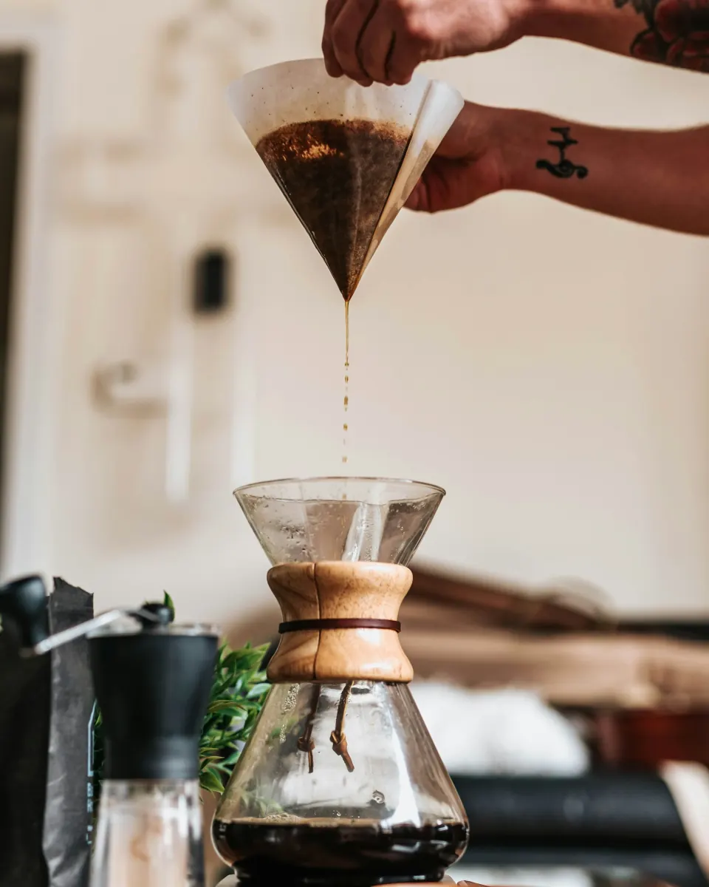
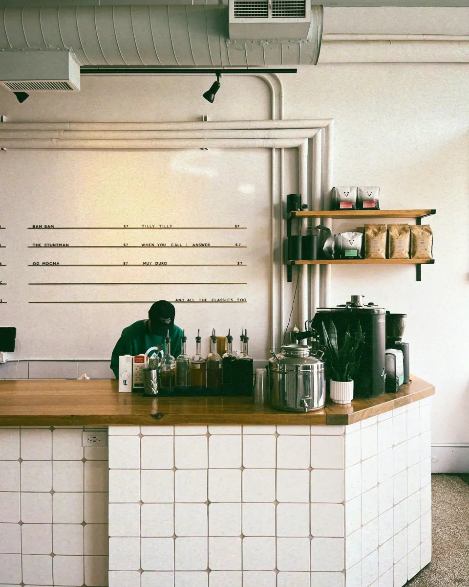
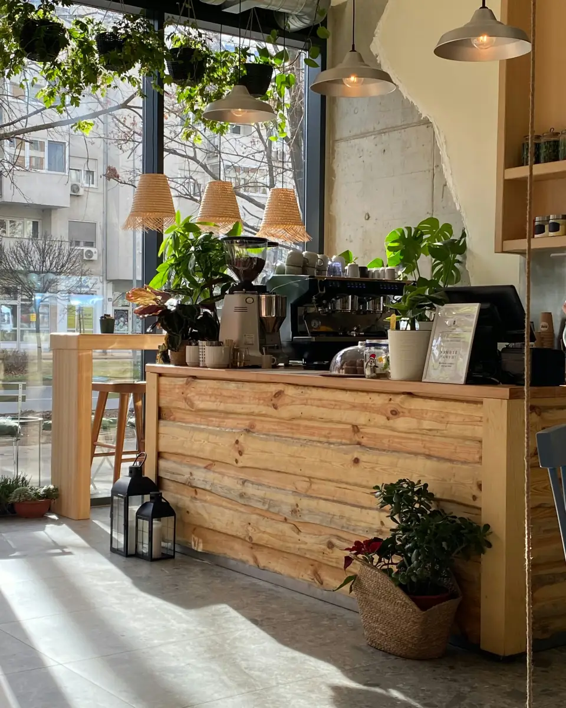
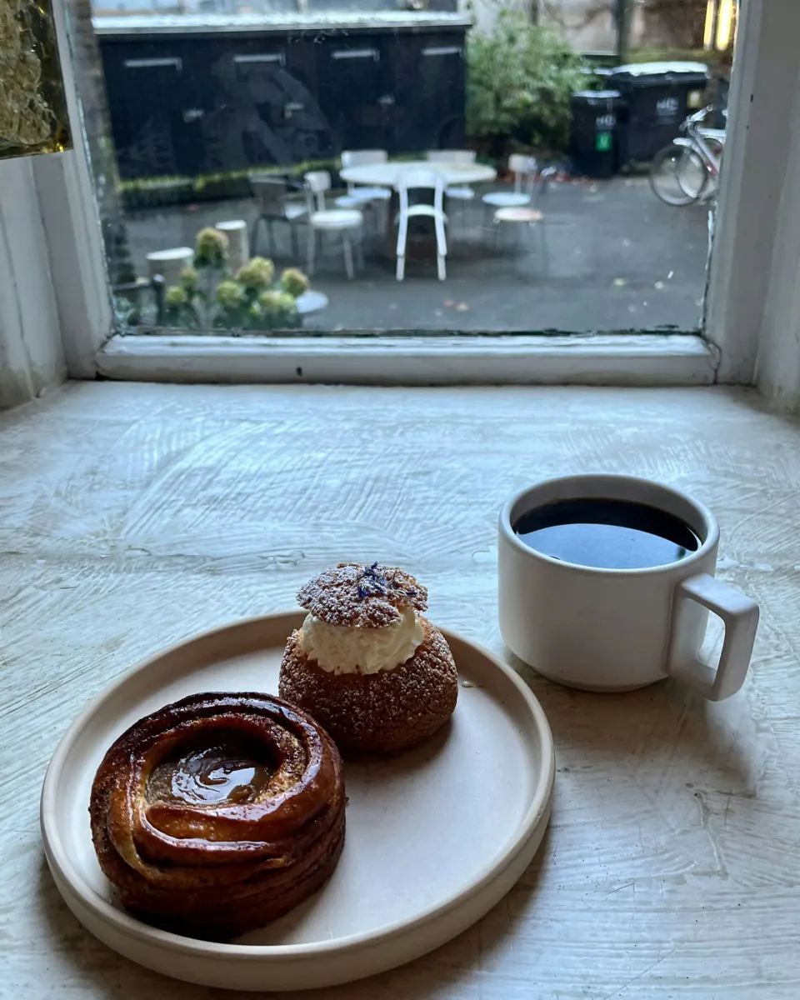

ふらっと寄って、
一杯ぶんの深呼吸。

風見台駅から一本入った路地の、カウンター6席の小さなコーヒースタンドです。豆を選んでいただき、一杯ずつハンドドリップでお淹れします。
営業時間 10:00–19:00（水曜定休）
- 場所
- 風見台駅 西口から徒歩5分
- 席
- カウンター6席・窓辺のベンチ2席
- 今月の豆
- エチオピア／コロンビア／KAZE ブレンド
風のように、
ふらっと寄れる店。
KAZE COFFEE は、通勤や散歩の途中に立ち寄れる店をめざして、2024年に開いたコーヒースタンドです。
豆は店の奥の小さな焙煎機で、毎週月曜と木曜に焼いています。注文を受けてから豆を挽き、お湯の温度と注ぐ速さを豆ごとに変えて淹れます。
どれを選べばいいか迷ったら、好きな味を一言お聞かせください。苦いのが好き、さっぱりしたい、ミルクに合うもの。そこから一緒に選びます。
- 焙煎
- 月・木曜、店内で少量ずつ
- 抽出
- ご注文ごとにハンドドリップ
- 豆
- 季節ごとに3〜4種類

店内とすごし方
白いタイルのカウンターと、窓辺のベンチだけの小さな店です。ひとりで本を読む方も、待ち合わせ前に一杯だけの方も歓迎します。
- 席
- カウンター6席、窓辺のベンチ2席。混み合う時間は1時間ほどでお願いしています。
- テイクアウト
- すべてのドリンクが可能です。マイカップのご持参で50円引き。
- 電源・Wi-Fi
- カウンター席に電源が2口。Wi-Fi のパスワードはレジでお伝えします。
- お支払い
- 現金、クレジットカード、交通系IC、QRコード決済。


行き方・営業時間
ご予約は不要です。そのままお越しください。
営業時間
| 月 | 10:00–19:00 |
|---|---|
| 火 | 10:00–19:00 |
| 水 | 定休日 |
| 木 | 10:00–19:00 |
| 金 | 10:00–20:00 |
| 土 | 9:00–18:00 |
| 日 | 9:00–18:00 |
ラストオーダーは閉店の30分前です。祝日は曜日どおりに営業します。
お問い合わせ
電話 03-0000-0000
架空の番号です（実際にはつながりません）。受付は営業時間内です。豆の取り置きや、4名以上でのご来店はお電話でご相談ください。
場所
〒153-0000 東京都目黒区風見台 1-2-3 コーヒービル 1F
- 風見台駅の西口を出て、駅前の横断歩道を渡ります。
- 商店街「かざみ通り」を3分ほどまっすぐ進みます。
- 郵便局のある角を右へ。1本目の路地を左に入った突き当たり、白いタイルの店です。
駐車場はありません。自転車は店の前に2台まで停められます。